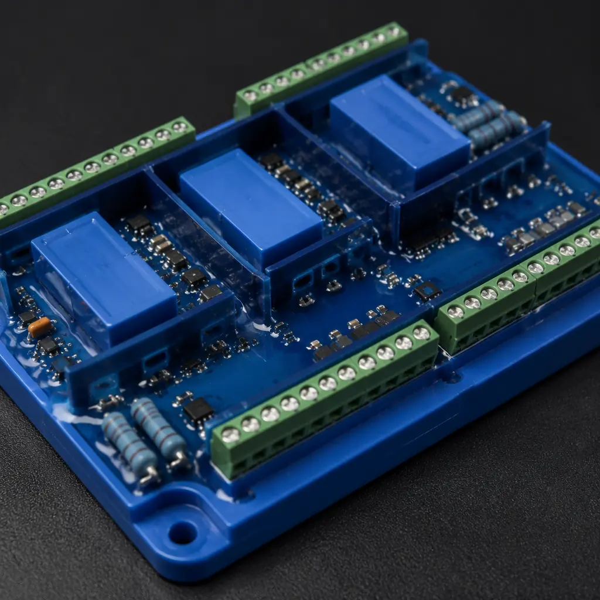
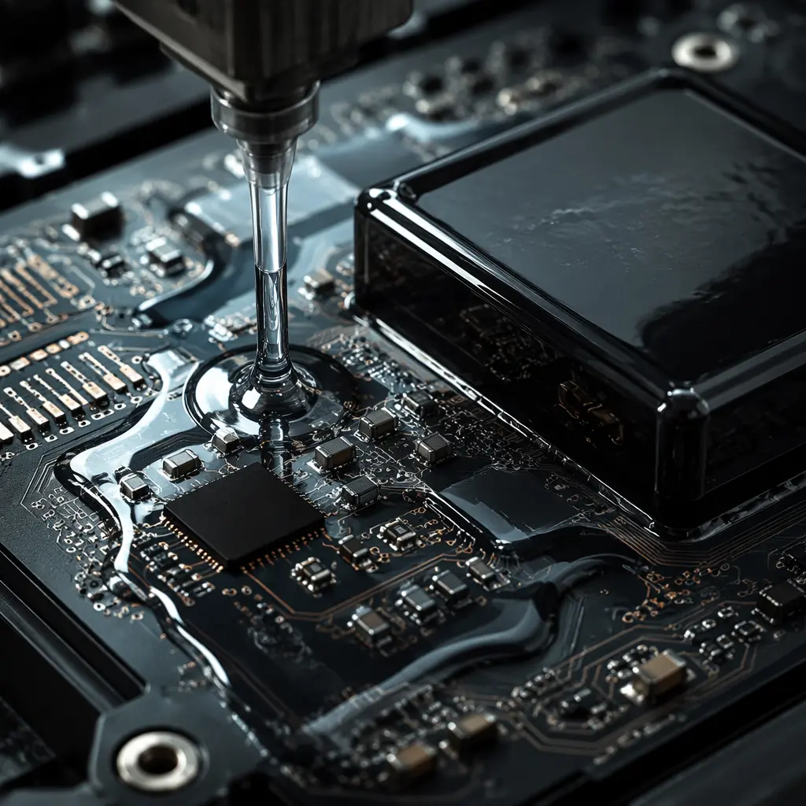

When a PCB destined for an offshore oil platform fails its ATEX certification audit on the final day of inspection, the cost isn't just the re-spin — it's the $450,000/day in deferred production that the operator will never recover. Intrinsic safety (IS) design is not a feature you bolt on after layout; it's a set of physical constraints that must govern every trace width, every component spacing, and every thermal decision from the first day of schematic capture.
At Huaxing PCBA, our Shenzhen facility has manufactured IS-certified PCBs for hazardous-location equipment deployed in 14 countries across oil & gas, chemical processing, and underground mining. With 8 SMT lines operating under an IATF 16949 quality system and a dedicated engineering team that performs intrinsic safety design verification as part of every DFM review, we've seen firsthand which design decisions pass certification on the first attempt — and which ones send projects back to the schematic level. This guide covers the complete framework: from the physics of energy limitation to the documentation package your notified body will demand.

What "Intrinsically Safe" Means for PCB Design
Intrinsic safety is a protection technique based on the principle of energy limitation. The core idea is deceptively simple: limit the electrical and thermal energy in a circuit to levels below what's required to ignite a specific hazardous atmosphere — even under fault conditions. In practice, this means every resistor, zener diode, capacitor, and PCB trace must be analyzed under a "two-fault" assumption: the circuit must remain incapable of causing ignition even after two independent component failures.
This distinguishes intrinsic safety from the two other common protection methods for hazardous locations:
Intrinsic Safety (Ex i) — Energy Limitation at the Circuit Level
The PCB itself is designed so it cannot store or release enough energy to ignite the atmosphere. No heavy enclosures required — the safety is in the circuit design, not the packaging. This is the only technique permitted in Zone 0 (continuous hazard). Certified to IEC 60079-11 and ATEX Directive 2014/34/EU.
Explosion-Proof (Ex d) — Containment
The PCB sits inside a heavy cast-metal enclosure designed to contain an internal explosion and quench any flame before it reaches the outside atmosphere. Safe, but heavy, expensive, and limited to Zone 1/2 — not permitted in Zone 0 where gas is continuously present.
Purged/Pressurized (Ex p) — Exclusion
A protective gas (usually clean air or nitrogen) is continuously fed into the enclosure at positive pressure to keep the flammable atmosphere out. Requires a constant gas supply and monitoring system — high operational cost, typical for large control cabinets rather than field instruments.
The ATEX directive defines hazard zones by the probability and duration of explosive atmosphere presence. Zone 0 (gas) and Zone 20 (dust) represent areas where the hazard is present continuously or for long periods — these demand the highest level of protection (Category 1 equipment, "ia" level of intrinsic safety). Zone 1/21 covers areas where the hazard is likely under normal operation ("ib" level). Zone 2/22 covers areas where the hazard is unlikely and brief if it occurs ("ic" level). The zone your equipment targets directly determines your PCB's creepage distances, fault-tolerance requirements, and certification pathway.
The two fundamental IS circuit architectures are the zener barrier and the galvanic isolator. A zener barrier uses a series resistor to limit current and redundant parallel zener diodes (minimum two, three for "ia" applications) to clamp voltage — if the zeners fail short, current is still limited by the resistor. A galvanic isolator uses transformers or optocouplers to physically separate the hazardous-area circuit from the safe-area circuit, providing isolation typically rated at ≥1,500 V for "ia" applications per IEC 60079-11. Most modern IS designs use galvanic isolation for data paths (digital isolators, optocouplers) and zener barriers for power paths, combining both techniques on a single PCB.
Key Takeaway: Every trace, component, and spacing decision must survive a "two-fault" analysis — the circuit must remain safe even after two independent component failures. When a certification body reviews your design, they don't ask "does it work?", they ask "what happens when two things break simultaneously?"
Key PCB Design Rules for Intrinsic Safety
The IEC 60079-11 standard translates the energy-limitation principle into specific, measurable PCB layout rules. These are not guidelines — they are mandatory requirements that a notified body will verify with micrometer measurements during certification testing.
Creepage and Clearance Distances per IEC 60079-11
For circuits up to 30 V, the minimum creepage distance is 3.0 mm between intrinsically safe and non-intrinsically safe circuits for Group IIC (hydrogen/acetylene — the most easily ignited gases). This increases to 6.0 mm at 60 V, 8.0 mm at 90 V, and 10.0 mm at 190 V. Clearance (through-air) distances are typically 1.5 mm for 30 V circuits rising to 5.0 mm at 190 V. For Group IIB (ethylene) and IIA (propane), distances are reduced — roughly 2/3 and 1/2 of IIC values respectively. The separation must be maintained across all PCB layers — vias connecting IS and non-IS planes must maintain these distances in all three dimensions. Refer to our high-voltage PCB design guide for related creepage fundamentals that apply across all safety-critical designs.
Zener Barrier Integration — Redundancy and Encapsulation
A compliant zener barrier uses a series resistor (typically wire-wound or metal-film, rated for worst-case fault power dissipation) followed by at least two parallel zener diodes for "ib" protection level or three for "ia" (Zone 0). The zeners must be selected so that any single zener can handle the full fault current indefinitely — this typically means using zeners rated at 1.5× the maximum circuit voltage. The entire barrier network must be encapsulated in a compound that meets the requirements of IEC 60079-11 Clause 7.6 (no air gaps, adhesion to PCB surface, thermal conductivity sufficient for heat dissipation under fault). The series resistor itself must be an infallible component — wire-wound types with a declared failure mode (open circuit only) are preferred over film resistors that can fail short.
Galvanic Isolation — Optocouplers and Digital Isolators
Isolation components must provide a rated withstand voltage of ≥1,500 V for "ia" and "ib" applications. The isolation barrier must be maintained across the PCB — this means a physical separation zone (often a routed slot or at minimum a clearly defined creepage path) between the IS side and non-IS side of the isolator. Digital isolators using capacitive or magnetic coupling (e.g., TI ISO78xx, ADI ADuM series) are increasingly preferred over optocouplers for their higher data rates and lower power consumption, but they must carry explicit IEC 60747-5-5 or VDE 0884-11 certification for reinforced isolation. The PCB layout must ensure no copper pour, ground plane, or signal trace crosses the isolation boundary — a violation that a certification engineer will catch immediately.
Thermal Management Under Fault Conditions
The surface temperature of any component or PCB area must not exceed the T-class limit for the target gas group. For T4 (the most common requirement for industrial IS equipment), the maximum surface temperature is 135°C. For T6 (the strictest), it's 85°C. This analysis must consider worst-case fault conditions: a zener diode clamping at full fault current, a series resistor dissipating maximum power, an IC operating at maximum junction temperature after a regulator failure. Thermal imaging during prototype testing is not optional — the notified body will require thermal test reports showing all surface temperatures under representative fault scenarios. PCB copper weight and thermal via placement must be selected to keep component case temperatures below their T-class limits even with +40°C ambient (the standard reference ambient for IS certification).
Component Derating — The 2/3 Rule
IEC 60079-11 requires that all components affecting intrinsic safety be operated at no more than 2/3 of their rated maximum voltage, current, and power. For "ia" protection level (Zone 0), this extends to the more conservative infallible component assessment: any component whose failure could compromise safety must either be derated to 2/3 of its ratings AND be of a type with a defined failure mode (fail-open for resistors, fail-short for zener diodes), or be duplicated with redundancy so a single failure cannot create a hazardous condition. Transistors and ICs are generally not considered infallible — if a transistor failure could apply full supply voltage to the hazardous area, the design must include a redundant clamping mechanism downstream.
PCB Material Selection — CTI and PTI Requirements
For Group IIC applications (hydrogen, acetylene), the PCB base material must have a Comparative Tracking Index (CTI) of at least 175 V, with a Proof Tracking Index (PTI) also ≥175 V. This effectively requires FR-4 with a minimum CTI rating — standard FR-4 typically achieves CTI 175-249 V (Material Group IIIa per IEC 60112), which is acceptable for most IS applications. For higher voltages or Group I applications (mining — methane atmosphere), CTI ≥400 V (Material Group I) may be required, which typically means high-CTI laminate grades. The PCB manufacturer must provide a material certificate documenting the CTI/PTI rating of the specific laminate lot used. See our PCB materials guide for a complete breakdown of laminate selection criteria.
Procurement Reality: A single creepage violation — one trace 2.8 mm instead of the required 3.0 mm — will fail an ATEX certification audit. The notified body's test engineer measures with calibrated calipers, not a ruler. We've seen $80,000 certification programs delayed by six weeks because of a single spacing error caught at the audit stage. Our DFM review includes a pre-certification creepage audit against your declared zone and gas group before a single board is fabricated.
Encapsulation and Conformal Coating for Hazardous PCBs
Encapsulation serves a dual purpose in IS design: it maintains creepage distances by eliminating air gaps between conductors, and it protects zener barrier networks from mechanical damage that could compromise redundancy. The choice of potting compound and application method directly affects whether a certification body accepts the encapsulation as a "solid insulation" equivalent under IEC 60079-11.

Three potting compound families dominate IS applications. Epoxy offers the highest mechanical strength and chemical resistance — preferred for downhole oil & gas tools that see 150°C+ ambient and aggressive wellbore fluids. Silicone (typically two-part RTV) provides the widest temperature range (−55°C to +200°C) and remains flexible after curing, which reduces stress on solder joints during thermal cycling — the default choice for most industrial IS transmitters. Polyurethane offers a middle ground: good chemical resistance with lower exotherm during curing than epoxy, making it suitable for temperature-sensitive components. All three must be applied with vacuum degassing to eliminate bubbles, as any air pocket represents a potential creepage path that invalidates the encapsulation.
Conformal coating is typically used alongside — not instead of — full encapsulation. Areas that cannot be potted (connectors, programming headers, test points) receive conformal coating to protect against moisture and conductive dust. For IS applications, parylene (vapor-deposited, 25-75 μm thickness) is the gold standard — it provides pinhole-free coverage with excellent dielectric strength and is transparent, allowing visual inspection of underlying circuitry. Acrylic coatings (AR, per IPC-CC-830) are the budget alternative, adequate for Zone 2/22 applications but not recommended for Zone 0. Silicone conformal coatings offer the best high-temperature performance but are softer and more prone to abrasion. For a complete analysis of coating types and application methods, see our conformal coating guide.
The thermal penalty of full encapsulation is significant and must be accounted for in the thermal analysis. Potting compound acts as a thermal insulator — a fully potted PCB assembly typically sees junction temperature rises of 15-25°C above an un-potted equivalent at the same power dissipation. This directly impacts T-class compliance: a design that operates at 120°C un-potted may exceed the T4 limit of 135°C once encapsulated. Thermal vias under the zener barrier network and thermally conductive potting compounds (epoxy with aluminum oxide filler) can mitigate this, but the final thermal verification must be performed on potted assemblies — not bare boards.
ATEX vs IECEx vs North American Certification Pathways
Choosing the wrong certification pathway can add 8-12 weeks to a product launch and cost an extra $15,000-$35,000 in re-testing when the notified body rejects documentation prepared for the wrong scheme. Each pathway has distinct documentation requirements, testing standards, and mutual recognition agreements that determine where your product can be legally sold.
| Aspect | ATEX (EU) | IECEx (Global) | NEC 500/NFPA 70 (US) |
|---|---|---|---|
| Applicable Zones | Zone 0/1/2 (Gas), Zone 20/21/22 (Dust) | Zone 0/1/2 (Gas), Zone 20/21/22 (Dust) | Class I Div 1/2 (Gas), Class II Div 1/2 (Dust) |
| Certification Body | EU Notified Body (e.g., DEKRA, SGS, TÜV) | IECEx Certification Body (ExCB) | NRTL (e.g., UL, FM, CSA) |
| PCB Documentation | Technical File + QAN (Quality Assurance Notification) | QAR (Quality Assessment Report) + Test Reports | Control Drawing + NRTL Listing Report |
| Typical Timeline | 12-16 weeks | 10-14 weeks | 8-12 weeks |
| PCB Manufacturer Audit | QAN audit of manufacturer's quality system (ISO 9001 minimum) | QAR audit, similar scope to ATEX QAN | NRTL quarterly factory inspections |
| Mutual Recognition | EU/EEA only (mandatory for EU market) | Accepted in AU, NZ, SG, ZA, BR, KR + others | US and Canada (CSA) only |
| PCB Marking Requirement | CE + Ex marking + Notified Body number | IECEx CoC number on product label | NRTL mark (UL, FM, CSA logo) |
The documentation package for a PCB manufacturer working on IS products is substantial. For ATEX, the Technical File must include: a complete schematic with all IS boundaries marked, a PCB layout drawing showing creepage/clearance measurements for every IS-to-non-IS interface, the component bill of materials with manufacturer data sheets proving the infallible rating of safety-critical components, and a conformity assessment route document (Module B + D for production quality assurance, or Module B + C for type examination only). For IECEx, the equivalent QAR must demonstrate that the manufacturer's quality system meets the requirements of IECEx 02 (OD 005) — which is broadly equivalent to ATEX QAN but with its own audit checklist and reporting format.
For North American markets, the Control Drawing is the critical document. Unlike the European approach of detailed technical files, the US system (per NEC 500/505 and NFPA 70) requires a control drawing that specifies: the entity parameters (Vmax, Imax, Pmax, Ca, La) of each IS circuit, the interconnection requirements, and the specific approved apparatus that can connect to each IS port. The control drawing must be approved by the NRTL and cannot be modified without re-approval — a constraint that catches many first-time IS designers off guard.
Our factory has supported customers through all three certification pathways. For guidance on broader compliance requirements beyond intrinsic safety, see our PCB certifications guide and our overview of factory audit requirements for regulated industries.
Manufacturing Considerations for IS PCBs
Building an intrinsically safe PCB is different from building a standard PCB — and the differences start at the fabrication stage, not at final test. A factory accustomed to commercial-grade production will inadvertently introduce defects that are cosmetic on a consumer board but certification-fatal on an IS design.
IPC Class 2 Minimum — Class 3 Recommended for Zone 0
IPC Class 2 (Dedicated Service Electronic Products) is the minimum acceptable standard for IS boards because Class 2 inspection criteria catch the kinds of defects — voids in plated through-holes, insufficient annular ring, solder mask misregistration — that compromise creepage distances. For Zone 0 "ia" equipment, IPC Class 3 is strongly recommended: the tighter acceptance criteria (e.g., maximum 15% void in barrel vs 25% for Class 2) ensure that the PCB maintains its designed clearances even after thermal cycling and mechanical stress. The incremental cost of Class 3 over Class 2 is typically 15-25% — negligible compared to the cost of a failed certification audit.
Solder Mask Coverage Over Zener Barrier Networks
The zener barrier area must receive full solder mask coverage with no skips or pinholes. The solder mask contributes to the creepage distance between the zener terminals and any adjacent non-IS traces. A solder mask dam between IS and non-IS areas is mandatory — this is typically a 0.3-0.5 mm strip of mask between the two domains that acts as an additional barrier. The mask must be inspected under magnification after reflow — a single solder bridge across the IS/non-IS boundary is a certification failure.
In-Circuit Testing Within IS Energy Limits
Standard ICT (in-circuit test) applies voltages and currents to every net to detect shorts, opens, and component value errors. On an IS board, the ICT program must be modified so that no test vector injects more energy into the circuit than the IS limit for that zone. This typically means reducing test voltages from the standard 0.2-10 V range to IS-compatible levels and adding current-limiting resistors in the test fixture. Some ICT systems allow per-pin voltage/current limits in the test program; if not, a dedicated IS-compatible test fixture with built-in energy limiting may be required.
Traceability per IPC-1782 for Safety-Critical Boards
IPC-1782 defines four levels of traceability for electronic assemblies. IS PCBs for Zone 0 and Zone 1 applications should meet Level 3 (Comprehensive Traceability) or Level 4 (Advanced Traceability): every component on the PCB must be traceable to its specific manufacturing lot, date code, and supplier, and this data must be retained for the product's service life plus 10 years. The notified body will request this traceability data if a field failure investigation requires determining whether a specific batch of PCBs may be affected by a component-level issue. Our factory maintains full IPC-1782 Level 3 traceability as standard for all regulated-industry orders.
Factory Audit Reality: ATEX QAN requires a notified body auditor to visit the PCB manufacturer's facility and verify the quality system against Annex IV of Directive 2014/34/EU. The auditor checks: incoming inspection records for safety-critical components, production process controls (solder paste inspection, reflow profiles, AOI programming), calibration records for all measurement equipment, and the non-conformance/corrective action system. A factory that has never undergone an ATEX QAN audit will fail on documentation gaps alone — the audit typically finds 8-15 non-conformances on a first visit. Our facility has passed ATEX QAN audits from three different EU notified bodies, with the most recent audit closing with zero major findings.
Application Examples
Intrinsic safety design principles manifest differently across industries, but the underlying physics of energy limitation and fault tolerance remains constant. These four application examples illustrate how IS requirements translate into specific PCB design decisions.
Oil & Gas Downhole Sensors — Zone 0, 150°C+ Ambient
Downhole measurement-while-drilling (MWD) tools operate at depths where ambient temperatures exceed 150°C and pressures reach 20,000 psi. The PCB must use high-temperature laminates (polyimide or high-Tg FR-4 with Tg >180°C), components rated to 175°C or 200°C (automotive/defense grade), and silicone potting compound that maintains dielectric strength at elevated temperature. Zener barriers must use zeners with low temperature coefficient — a 5.1 V zener that drifts to 5.6 V at 175°C changes the energy budget of the entire IS circuit. Creepage distances must account for the reduced dielectric strength of PCB material at elevated temperature — a 20% safety margin over the IEC 60079-11 table values is standard practice for downhole designs.
Chemical Plant Gas Detectors — 4-20 mA Loop-Powered IS Circuits
Fixed gas detectors in chemical plants use 4-20 mA current loops to transmit concentration data back to the control room. The entire sensor assembly — electrochemical cell, amplifier, and loop interface — must be intrinsically safe because it sits in Zone 1 or Zone 2 atmospheres where solvent vapors may be present. The IS design challenge is power budgeting: the entire circuit must operate on the <100 mW available from a typical IS loop (24 V through a 300 Ω barrier resistor, delivering approximately 80 mW to the load). Low-power op-amps (e.g., TI LPV821, <650 nA supply current), nano-power ADCs, and careful power sequencing are essential — every microamp matters when the total power budget for the entire PCB is roughly one-tenth of a standard LED indicator. For similar power-constrained designs, see our guide on industrial control PCB design.
Mining Communication Devices — IECEx Group I (Methane)
Underground coal mining presents the Group I hazard: methane (firedamp) and coal dust. IECEx Group I equipment has stricter requirements than Group II: no light metals (aluminum, magnesium, titanium) in the enclosure if they could cause incendive sparks from friction, and the ignition energy of methane-air mixtures (0.28 mJ) requires more conservative energy limitation than most Group II gases. For a PCB in a miner's cap lamp radio or gas detector, this means: all energy storage components (capacitors, inductors) must be assessed for their stored energy at maximum fault voltage; any capacitor larger than 10 nF connected to the IS circuit requires a detailed energy calculation; and the temperature classification for Group I is 150°C maximum surface temperature (with a 450°C limit if coal dust deposition is prevented by the enclosure).
Pharmaceutical Solvent Handling — Zone 1/2 with Combined Gas + Dust Hazards
Pharmaceutical manufacturing facilities present a combined hazard: solvent vapors (typically ethanol, isopropanol, acetone — Group IIA or IIB gases) and combustible dust from active pharmaceutical ingredient (API) processing. Equipment for these environments must be dual-certified for both gas and dust hazards (Ex ia IIC T4 Ga / Ex ia IIIC T135°C Da). This means the PCB design must satisfy both IEC 60079-11 (gas) and IEC 60079-31 (dust) requirements simultaneously. The dust requirement adds a key PCB constraint: the maximum surface temperature must consider a 5 mm dust layer on any surface (per IEC 60079-31, Clause 5.2), which acts as thermal insulation. A PCB operating at 110°C without dust may reach 135°C+ with a 5 mm dust layer — potentially exceeding T4 limits. The practical solution is either: over-engineering the thermal design with a lower maximum temperature margin, or using a dust-tight enclosure (IP6X) that prevents dust accumulation on the PCB, which exempts the surface from the dust layer analysis.
Getting Your IS PCB Design Right — Before You Send It to Audit
Intrinsically safe PCB design rewards front-loaded engineering. The pattern we've observed across hundreds of IS projects is consistent: designs that invest 40-60 hours in pre-certification analysis (creepage audit, thermal modeling under fault conditions, component derating verification) pass their notified body audit on the first attempt. Designs that rush to fabrication and treat certification as a "final check" step typically require 2-3 re-spins, each adding 8-10 weeks to the program schedule.
At Huaxing PCBA, we integrate intrinsic safety design verification into our standard DFM review for every IS project — before a single board is fabricated, our engineering team checks every creepage distance against your declared zone and gas group, verifies zener barrier redundancy and fault power ratings, and validates that all isolation components carry the required certification marks for your target protection level. Our facility operates under IATF 16949 and ISO 9001 quality systems that have passed ATEX QAN audits from multiple EU notified bodies, and we maintain full IPC-1782 Level 3 traceability for all safety-critical orders. Read our certifications guide for a complete overview or contact our engineering team to discuss your IS PCB requirements directly.